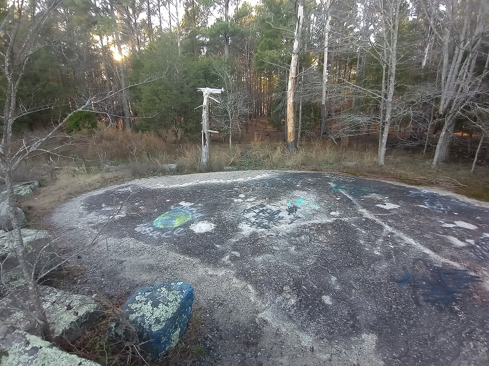
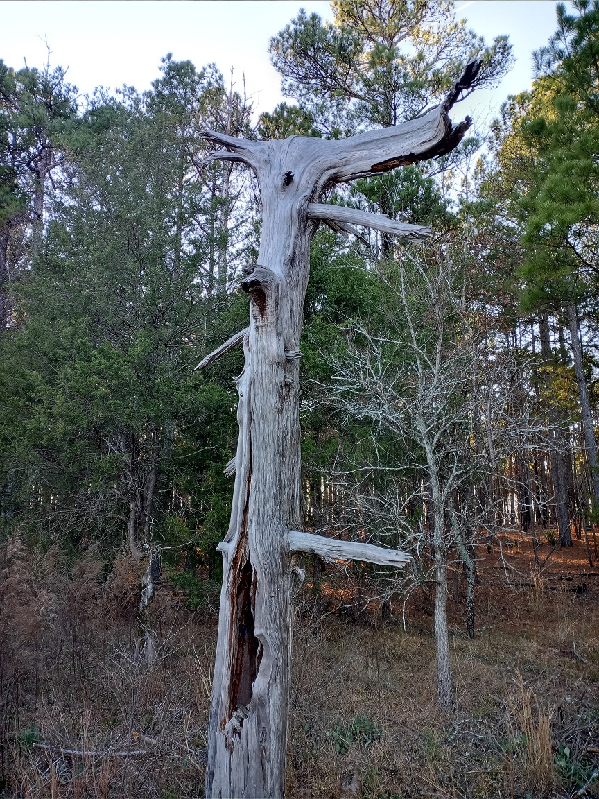

The hike was pretty solitary, I maybe saw a couple of fellow vistiors along the way, but naturally we all kept to ourselves. Sometimes it's just nice to enjoy the quiet on occasion. Take in the scenery without being distracted by other things in your life at the time.It's a welcome break from all the stress that's been building say...for the past three years.
My favorite spot to visit whenever I go to 40 Acre Rock is this small stone clearing, with one dead tree standing alone. The tree is pale and withered, and looks like it could fall whenever it pleases. There is just something so enjoyably spooky about the whole area. When I was younger and my parents would take me out here, they used to scare me and my siblings with stories of sacrifice and occult practices. Something you'd hear as a kid and really believe but as an adult you realize it doesn't hold much water. Though some people like to play into the stories by adding their own...creative graffiti.
 But there was still more to see on my hike, aside from this witching spot.